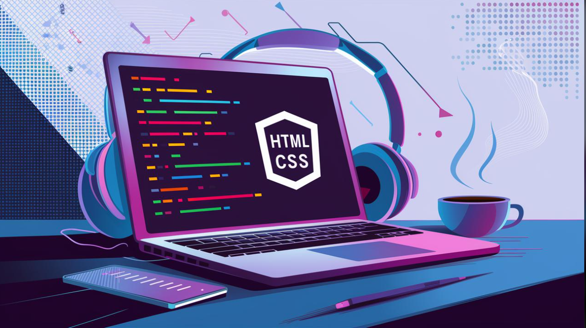

اسم الطالبة: شروق سامي الهادي نصر موسي فضه
الرقم الجامعي: 2502076
المقرر: تطبيقات الإنترنت والمنصات الإلكترونية
تعتبر شبكة الإنترنت جزءاً لا يتجزأ من حياتنا اليومية، وتقف خلف كل موقع إلكتروني نزوره هيكلية برمجية دقيقة. إذا كانت لغة HTML هي الهيكل الأساسي لأي صفحة ويب، فإن لغة CSS (Cascading Style Sheets) أو أوراق الأنماط المتتالية هي التي تمنح هذا الهيكل مظهراً أنيقاً وجذاباً.
ظهرت لغة CSS لتفصل بين محتوى الصفحة الهيكلي وتنسيقها البصري، مما سهّل على المطورين تصميم صفحات ويب متجاوبة مع جميع الأجهزة مثل الهواتف الذكية والحواسيب.

هي لغة تنسيق تُستخدم لتحديد شكل وتنسيق العناصر المكتوبة بلغة HTML. وتتكون قاعدة CSS من عنصرين أساسيين:
المحدد (Selector): وهو العنصر المراد تنسيقه، مثل h1 أو p أو فئة معينة.
الخصائص والقيم (Declarations): مثل تحديد اللون (color)، وحجم الخط (font-size)، ولون الخلفية (background-color).
1. فصل المحتوى عن التصميم: تتيح إمكانية تعديل تصميم موقع كامل من ملف واحد دون الحاجة إلى تعديل كل صفحة HTML على حدة.
2. التوافقية والسرعة: تساعد ملفات CSS على تنظيم التصميم وإمكانية تخزين ملفات التنسيق مؤقتاً في المتصفح.
3. التصميم المتجاوب (Responsive Design): بفضل تقنيات مثل Flexbox و Grid و Media Queries، أصبح تصميم المواقع التي تتكيف مع أحجام الشاشات المختلفة أكثر سهولة ومرونة.
يوضح المثال التالي كيفية استخدام CSS لتغيير تنسيق فقرة نصية وزر تفاعلي:
/* تنسيق الفقرة النصية */
p {
color: #333333;
font-family: 'Cairo', sans-serif;
font-size: 16px;
line-height: 1.6;
}
/* تنسيق زر تفاعلي */
.btn-primary {
background-color: #007bff;
color: white;
padding: 10px 20px;
border-radius: 5px;
border: none;
cursor: pointer;
}
.btn-primary:hover {
background-color: #0056b3;
}
| وجه المقارنة | HTML | CSS |
|---|---|---|
| الوظيفة | بناء هيكل الصفحة | تنسيق وتصميم الصفحة |
| الاستخدام | إضافة النصوص والصور والعناوين | تحديد الألوان والخطوط والخلفيات |
| النتيجة | محتوى منظم | مظهر جذاب ومنسق |